在巴特赖兴哈尔地区，人们开采盐的历史已有数千年之久。天然盐泉可能是人类最初在此定居的主要原因之一。公元前2000年左右的历史工具表明，凯尔特人是最早的“专业”制盐者。他们改进了铁器的加工工艺，并且很可能是该地区最早使用平底锅煮沸盐水并进行盐的商业交易的民族。
品牌
对质量的承诺
我们的巴特赖兴哈勒阿尔卑斯盐（Bad Reichenhaller AlpenSalz）名副其实。作为德国最知名的盐品牌，它代表着来自阿尔卑斯山脉深处的高品质盐，由纯净的高山盐水精心提炼而成。我们将阿尔卑斯山的馈赠带到您的餐桌，为您带来纯正的美味。
我们始终将产品质量放在首位。定期的内部和外部审核确保我们始终符合高标准的质量要求。所有巴特赖兴哈勒产品均适合纯素食者食用，且不含增味剂、防腐剂、色素和纳米颗粒。
我们的产品经过部分草药和香料的精制，并添加了碘、氟、叶酸或硒，不仅是日常烹饪和调味的可靠伙伴，而且对全家人的均衡饮食也做出了宝贵的贡献。
几代以来，巴特赖兴哈勒阿尔卑斯盐一直是许多人心中的家。因此，我们无比自豪和欣喜地说：我们的阿尔卑斯盐。我们的家。我们的口味。
添加了多种珍贵维生素和矿物质：我们的高山盐产品可帮助您摄取所需的碘、氟、叶酸或硒。仅需2克BRH高山碘盐+氟+叶酸即可满足您每日所需的B族维生素叶酸。
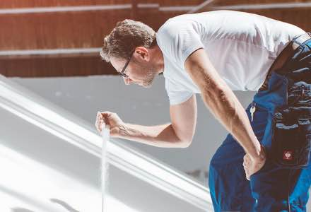历史
- 发现盐水泉公元前2000年
- 罗马历史学家塔西佗记载公元58-120年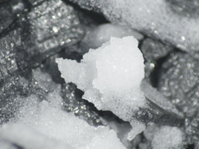
最早关于制盐的记载见于塔西佗的著作。他描述了公元1世纪日耳曼民族使用的一种方法：将盐水浇在燃烧的木柴堆上，待冷却后刮掉沉积在火柴上的盐壳。这种制盐技术可能在史前时期就已经存在，并长期保存了下来。
- 最早有记载的早期盐生产记录公元前696年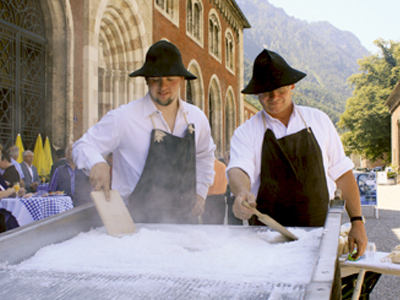
在巴伐利亚人的土地上，从波希米亚森林到阿尔卑斯山，从莱希河到恩斯河，分布着六处盐场。它们都以西日耳曼语“Hall”（大厅）一词来指代。盐是在盐池中提取的，正如一份文献记载：“……公元696年，在赖兴哈尔，二十个盐池被委托给萨尔茨堡主教供其私人使用……”
- 首条盐水管道的建设1616/1619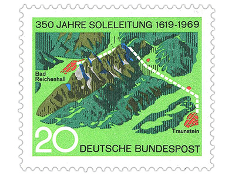
熬制盐需要大量的柴火。1613年，赖兴哈尔发现了一处新的盐水泉，燃料需求随之增加。一个独特的解决方案是：不再需要将沉重的木柴运到盐场，而是将更易于运输的盐水直接运到木柴处。巴伐利亚公爵马克西米利安一世下令修建一条从赖兴哈尔到特劳恩施泰因的盐水管道。宫廷建筑师汉斯·雷芬斯图尔和他的儿子西蒙受命“引导水流翻越群山”。这项始于1617年的工程规模庞大，其中包括六座带泵房的升降机、一座拥有四座熬盐房、仓库和住宅的新盐场，以及一座用于在特劳恩河上运输柴火的木材浮动设施。
- 盐水管道的成功模式仍在继续1816/1817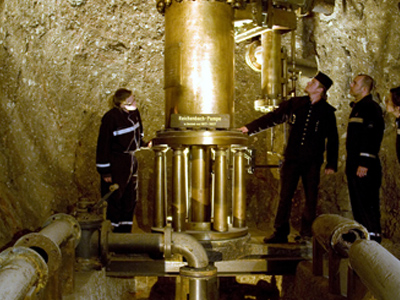
在第一条盐水管道建成200年后，国王马克西米利安一世和他的大臣蒙特格拉斯伯爵委托巴伐利亚皇家炼油委员会的格奥尔格·冯·赖兴巴赫修建一条从贝希特斯加登到赖兴哈尔的盐水管道。为了克服高差，他完成了一项技术杰作：建造了这条盐水管道以及著名的赖兴巴赫水泵——一种水柱提升机。这些历史遗迹可以在巴特赖兴哈尔的“老盐场”（www.alte-saline.de）、贝希特斯加登盐矿（www.salzbergwerk.de）以及从贝希特斯加登到拉姆绍的“老盐水管道”徒步路线上欣赏。
- 城镇火灾后盐场的重建1834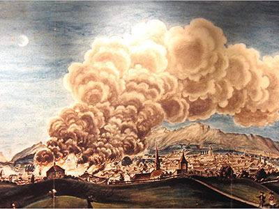
一场毁灭性的大火摧毁了赖兴哈尔盐场的大部分。在路德维希一世国王统治时期，盐场围绕着主泵房进行了重建，如今仍作为“老盐场”（Alte Saline）对外开放参观。
- 莱辛哈尔 (Reichenhall) 更名为巴特莱辛哈尔 (Bad Reichenhall)1890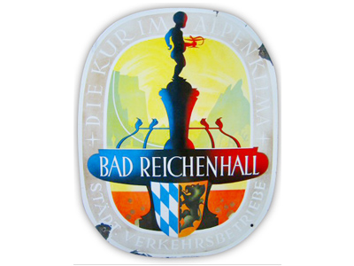
19世纪，赖兴哈尔发展成为国际知名的温泉度假胜地，拥有众多新艺术风格的别墅以及公共浴场和水疗中心。1890年，巴伐利亚摄政王颁布法令，允许赖兴哈尔在名称前加上“巴德”（温泉小镇的官方称谓）：赖兴哈尔从此成为巴德赖兴哈尔温泉小镇。
- 曾两次被烧毁，但都勇敢地重建了。1926/1943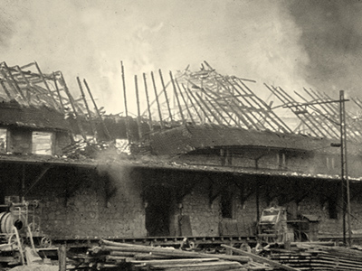
1926年，“新盐厂”（Neue Saline）竣工：当时最先进的技术是引入封闭式蒸发系统，与之前使用的开放式蒸发锅相比，该系统能耗更低，产量更高。1943年，盐厂部分设施再次毁于火灾。尽管损失惨重，但仅经过两个月的重建，盐厂便暂时恢复了运营。
- 巴伐利亚家庭的首批500克包装1950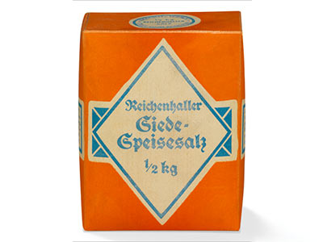
巴伐利亚的家庭主妇们第一次可以买到500克小包装的食盐了。食用盐、腌制盐和工业用盐则以“Reichenhaller Siede-Speisesalz”（莱兴哈尔蒸发食盐）的品牌名称，以50公斤袋装出售。菱形图案——巴伐利亚州旗上的元素——成为了品牌标识的标志，并印在所有包装上。
- 为全国市场上市进行大规模推广1955/56

销售范围扩展至全德国：1957年，巴特赖兴哈尔的食盐不仅在巴伐利亚州销售，而且以“巴特赖兴哈尔特级盐”的品牌名称在全国范围内销售。市场推广活动也十分引人注目，例如巡回宣传的食盐包装。
- 通过技术实现增长1958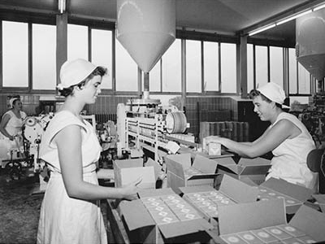
从 1958 年开始，生产实现了自动化：除了包装机外，还首次使用自动印刷机和冲孔机来生产 500 克包装。
- 添加了碘的食盐1960年以前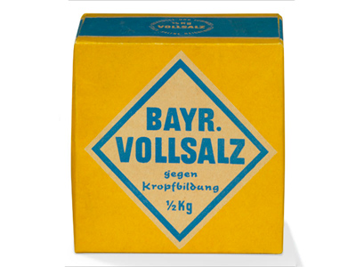
德国首次推出添加碘的食盐，产品名称为“Bayr. Vollsalz gegen Kropfbildung”（巴伐利亚碘盐，防止甲状腺肿形成）。这是德国应对碘短缺的一项重要举措。
- 第一款摇摇杯和迷你摇摇杯1970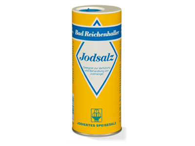
巴特赖兴哈勒（Bad Reichenhaller）现推出全新包装：实用可重复灌装的摇摇杯。这款广受欢迎的500克摇摇杯自问世以来不断优化，至今仍是该品牌的标志性产品，迷你装更是作为便捷的旅行伴侣而备受青睐。
- 新名称：Bad Reichenhaller MarkenSalz1971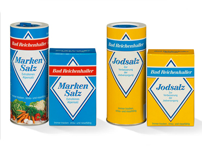
“Bad Reichenhaller MarkenSalz”品牌正式启用。原先名为“Bayrische Vollsalz mit Jod”（巴伐利亚碘盐）的产品，现更名为“Bad Reichenhaller JodSalz”。所有包装均采用统一设计，以配合此次包装升级。
- 带有某种“味道”的盐：琼瑶浆盐1987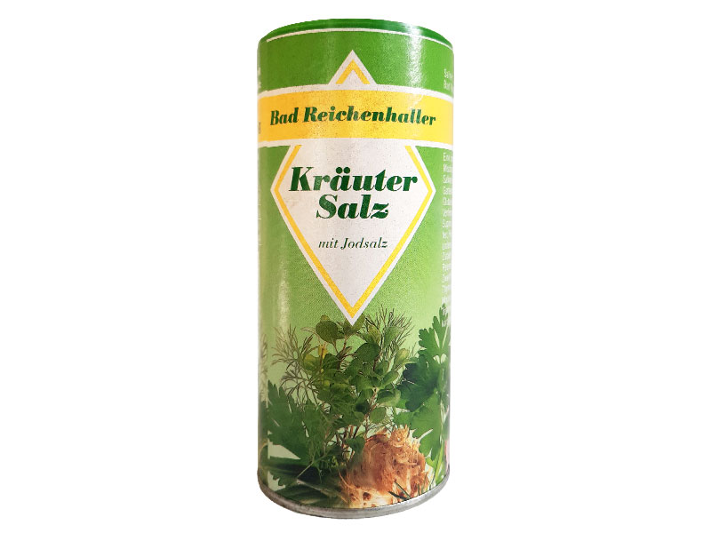
1987年，巴特赖兴哈勒将自家产的马尔肯盐与优质香草和香料混合，制成了香草盐（KräuterJodSalz），自此广受欢迎。
- 添加了其他益处的食盐1992/2002

1992年，巴特赖兴哈勒公司推出了创新产品MarkenJodSalz + Fluorid。同年，阿尔卑斯山脉的图案首次出现在该品牌的包装下半部分。十年后，首款添加了珍贵B族维生素叶酸的食盐问世：2002年，巴特赖兴哈勒公司将MarkenSalz系列扩展至四种产品，推出了MarkenJodSalz + Fluorid + Folsäure。
- 第一家 GewürzSalzMühlen2001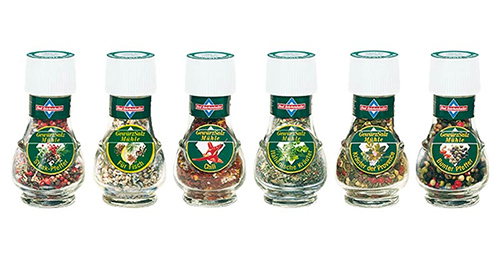
恰到好处的香料——新鲜研磨。巴特赖兴哈勒 (Bad Reichenhaller) 推出全新 GewürzSalzMühlen（调味盐研磨器），进一步丰富了其产品系列。新鲜研磨的香草或香料，搭配恰到好处的盐分，充分释放出浓郁的香气。
- 巴特赖兴哈勒焕然一新2006

所有盒子和罐子设计均重新包装。巴特赖兴哈勒品牌的传统特征——红色饰带和蓝色菱形图案——在新设计中继续出现。
- 巴特赖兴哈勒 (Bad Reichenhaller) 的第一批有机产品：MarkenSalzMühlen +2008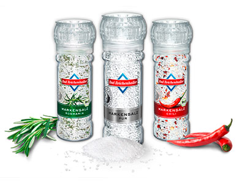
高品质、设计精美的MarkenSalzMühlen+盐磨不仅摆在餐桌上引人注目，更是提升各种菜肴风味的理想之选。共有三种口味：粗粒巴德赖兴哈勒MarkenJodSalz pur（纯盐）、迷迭香口味和辣椒口味。所有香草和香料均获得有机认证。
- 可能是世界上最爱挑刺的人2010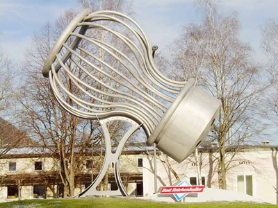
2010年12月8日，可能是世界上最大的盐瓶在巴特赖兴哈尔落成。这个重达4吨、高6.5米的盐瓶矗立在工厂大门前的环形路旁，已成为这座小镇的标志性景观。“如果不是这里，还能放在哪里呢？”市长赫伯特·拉克纳博士在落成典礼上问道。
- “Alte Saline”品牌博物馆开幕2011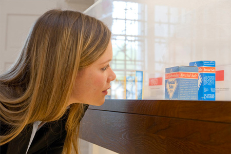
巴特赖兴哈尔又添一处景点：巴特赖兴哈尔品牌博物馆和盐店坐落于世界上最美丽的盐场之一。“老盐场”（Alte Saline）是巴特赖兴哈尔所有产品的历史发源地。在这里，感兴趣的游客可以了解关于盐和品牌历史的精彩故事。
- 最纯净的盐：SprühSalz2015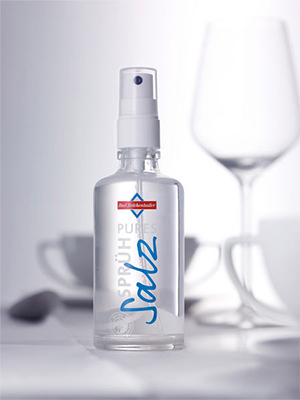
现代调味新方式：创新喷雾盐早在2001年就以“Alpenquellsole”之名问世。由于当时市场需求不足，这款产品一度停产。如今，时机已到。巴特赖兴哈勒喷雾盐（Bad Reichenhaller Sprühsalz）口味温和，可轻松快捷地为您的餐食增添风味。喷洒后，液态盐会以细雾状均匀地覆盖在食物上，赋予食物美妙的口感。这款纯天然盐水未经任何加工处理，直接装瓶出售。
- 新名称，新设计。2016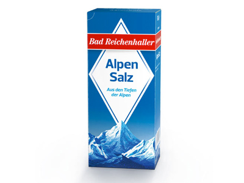
世代相传的厨房经典调料 MarkenSalz 现已更名为 AlpenSalz。此举更加突出了其巴伐利亚阿尔卑斯山的起源——巴伐利亚阿尔卑斯山是巴特赖兴哈勒产品不可或缺的一部分。包装设计也进行了现代化改造，但仍保留了其标志性的外观。
- 产品创新2023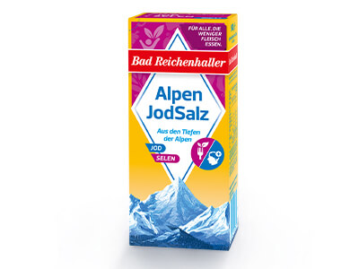
我们另一项创新产品——巴德赖兴哈勒高山碘盐+硒——进一步丰富了我们的产品线。这款产品以珍贵的盐为基础，添加了人体必需的微量元素。硒与碘一样，能够确保甲状腺正常功能并增强免疫系统。因此，这款盐非常适合低肉均衡饮食，因为与动物性食物不同，植物由于土壤硒含量低，其微量元素含量微乎其微。
- 重新推出优质食盐2025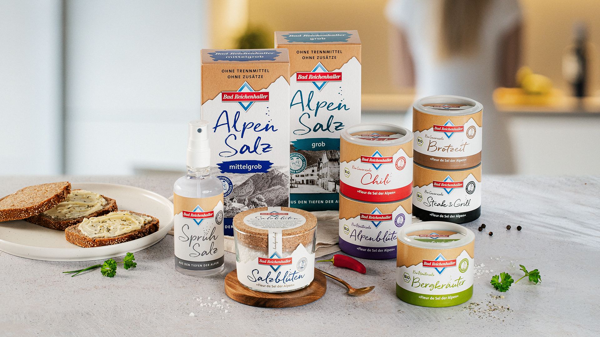
我们的高端系列——全天然阿尔卑斯山盐、喷雾盐和“阿尔卑斯之花”盐——迎来了全新的包装设计。我们手工从沸腾的锅中舀出巴特赖兴哈尔的盐花，然后轻轻风干这些精致的盐晶。这使得我们的“阿尔卑斯之花”盐成为鉴赏家们理想的指盐，无论是纯天然还是添加了精选有机香草和香料的改良版本，都堪称完美之选。全新的包装设计彰显了该系列产品的高品质和天然特性。
公司
巴特赖兴哈勒 (Bad Reichenhaller) 是西南德意志盐业股份公司 (SÜDWESTDEUTSCHE SALZWERKE AG) 旗下的品牌，代表着来自阿尔卑斯山脉深处的高品质食盐。它由纯净的阿尔卑斯山盐水制成，确保在调味、烹饪和烘焙方面拥有卓越的品质。这种来自阿尔卑斯山的“白色黄金”早在数百年前就已使其产地闻名遐迩。如今，巴特赖兴哈勒已成为德国食用盐领域最知名的品牌。巴特赖兴哈勒的产品系列包括添加或不添加维生素和微量元素的阿尔卑斯山盐，以满足均衡饮食的需求，此外还有多种调味盐和特色盐。
如有任何疑问、采访需求或需要任何照片素材，请随时联系我们！我们很乐意免费提供。
媒体联系人：
Südwestdeutsche Salzwerke AG
Petra Laqua
电话：00497131-9591846
电子邮件：petra.laqua@salzwerke.de